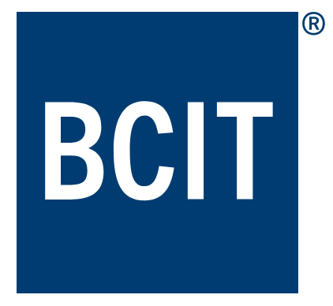

Rishi's Resume
SUMMARY
Motivated and detail-oriented IT Infrastructure Professional with a strong
educational background in Computer Information Systems. Currently pursuing
an Applied Software Development Associate certificate from BCIT,
complemented by hands-on experience in hardware/software support,
scripting, and IT infrastructure at JYSK. Proven ability to troubleshoot
servers, provide technical assistance, and develop automated solutions.
Adept at collaborative problem-solving and passionate about contributing
to innovative and impactful IT projects.
SKILLS
- Troubleshooting and Diagnosing
- Good Understanding of LAN/WAN concepts
- Script Writing
- Cloud Management
-
Proficient in languages like C++, Python, Java, SQL, CSS, HTML, and CSS
- Active Listening
- Organized, diligent, and tenacious
WORK EXPERIENCE
Technical Support Specialist
Coquitlam, BC
JYSK Canada/ Feb2022 to Current
-
Offer hardware/software support, troubleshooting servers, and managing
local Active Directory
- Write scripts to automate tasks, enhancing operational efficiency
-
Conduct comprehensive web scans to identify and report site
vulnerabilities
-
Perform Azure AD troubleshooting and Mobile Device Management (MDM)
-
Ensure the seamless operation of the disaster recovery server,
overseeing data backups, and addressing any related issues
-
Proficient in implementing and deploying Group Policy Objects (GPOs) to
ensure effective management and configuration of IT infrastructure
-
Provide support for Navision and Centara systems, ensuring seamless
operations
-
Collaborate with cross-functional teams to address technical issues and
implement solutions
-
Analyze system logs for potential errors or irregularities that could
indicate a security breach
- Document and update case notes for each request
- Troubleshoot synchronization between servers
Configuration Technician
Burnaby, BC
Microserve Business Computer Services/ Aug 2021 to Feb 2022
- Software and network configuration and troubleshooting
-
Conducted software and network configuration, ensuring client
satisfaction
-
Configured computer hardware components, ensuring optimal performance
-
Installed, troubleshooted, and administered server operating systems
- Diagnosed, repaired, and upgraded PC software and equipment
-
Contributed to the deployment and retirement of IT hardware, adhering to
data security requirements
Asset Recovery Technician
Burnaby, BC
Microserve Business Computer Services/ May 2021 to Feb 2022
-
Performed troubleshooting and repaired equipment in accordance with
manufacturer specifications
-
Maintained records of repairs, calibrations, and tests conducted on
equipment
- Replaced defective components or parts as required
-
Checked and configured BIOS for wiping procedures to protect client data
- Updated paperwork and tickets within internal systems
- Assisted in improving processes where possible or necessary
-
Managed the data flow between the computer's operating system and
attached devices
EDUCATION AND TRAINING
Diploma: Computer Information Systems
Kwantlen Polytechnic University Oct 2020
Surrey, BC

Associate certificate: Software Systems Development
British Columbia Institute of Technology
Burnaby, BC
UNIVERSITY PROJECTS
-
Server Operating Systems: Microsoft Server 2012 R2 Deployment
Successfully deployed a working server operating system with active
directory, DHCP, DNS, IIS, and VPN.
-
System Analysis & Design: Book Bank Management System
Led a team of five to develop a software solution for book selection,
utilizing SDLC, ER diagram, and Gantt Chart
Contact Details